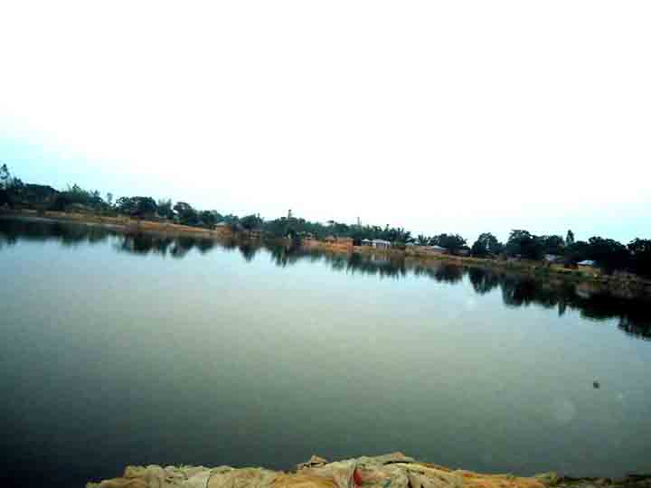
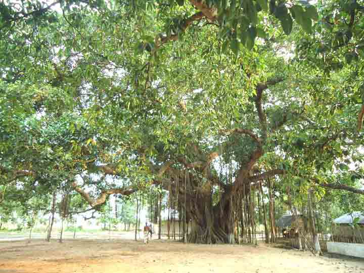
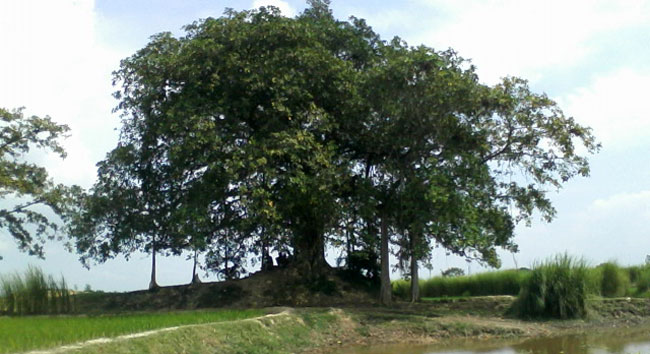
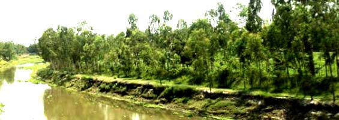

ইউনিয়ন পরিষদ থেকে দক্ষিন পশ্চিম প্রান্তে হেটে ১০মিঃ সময় লাগে। জেলার সদর উপজেলার একটি পুকুরের নাম ‘সদ্যপুষ্করিণী’।
রংপুর মহানগরী থেকে ৮ কিলোমিটার দূরে দক্ষিণ-পশ্চিম কোনে ৯ নম্বর সদ্যপুষ্করিণী ইউনিয়ন। ইউনিয়ন পরিষদ থেকে প্রায় ২ কিলোমিটার পশ্চিম-দক্ষিণ কোনে সদ্যপুষ্করিণী।
কথিত আছে তড়িঘড়ি করে এক রাতে খোড়া হয়েছে বলে এর নামকরণ করা হয়েছে ‘সদ্যপুষ্করিণী’।
বিশাল পুকুরের স্বচ্ছ জল এবং গাছগাছালি ঘেরা পুকুরপাড়ের শীতল বাতাস সহজেই শরীর জুড়িয়ে দেয়। এই পুকুরের নামে ইউনিয়ন পরিষদেরও নামকরণ করা হয়েছে সদ্যপুষ্করিণী ইউনিয়ন।
রংপুরের বাসিন্দা যারা পেশাগত কারণে বাইরে থাকেন, ঈদের ছুটিতে বাড়িতে এসে তারা সহজেই ঘুরে আসতে পারেন ইতিহাসের সাক্ষী সদ্যপুষ্করিণী থেকে। এছাড়া রংপুরে বাইরে থেকেও আসতে পারেন এ পুষ্করিণীর পাড়ে। কাছেই দেখতে পাবেন চৌদ্দ ভবন এবং বড়ভিটার বিশালাকৃতির বটগাছ। যা সহজেই আপন করে নেবে আপনাকে।
এছাড়াও সদ্যপুষ্করিণীর পাশেই রয়েছে বেহুলা-লক্ষ্ণিনদরের কাহিনীর উপজীব্য ‘চৌদ্দ ভুবন’ ও ‘জীবন-মরণ ঘাট’।
রংপুর জেলা প্রশাসন (ডিসি) অফিস থেকে প্রাপ্ত তথ্য থেকে জানা যায়, প্রায় ৬শ’ বছর পূর্বে এখতিয়ার উদ্দীন মোহাম্মদ বিন বখতিয়ার খিলজী’র শাসনামলে সৈন্য বাহিনী এই এলাকার মধ্যে দিয়ে যাওয়ার সময় তাদের পানির সমস্যা দেখা দেয়।
এ সময় কয়েক লক্ষাধিক সেনাসদস্য এখানে তাবু খাটিয়ে অবস্থান গ্রহণ করেন। পরে তারা পানির সমস্যা সমাধানের জন্য এখানে একটি পুকুর খনন করেন। তখন থেকে ওই পুকুরের নাম সদ্যপুস্করিণী হিসাবে প্রসিদ্ধ।
পর্ব পুরুষদের বর্ণনা মতে- বিপুল সংখ্যক সৈন্যের পানির প্রয়োজন পড়লে পানি সরবরাহ কঠিন হয়ে পড়ে। তাৎক্ষণিকভাবে সেনাপতি সিদ্ধান্ত নেন একটি পুকুর খননের। যেই কথা- সেই কাজ। সৈন্যরা লেগে পড়েন পুকুর খননে। আর এভাবেই এই বিশাল পুকুরের সৃষ্টি।
রংপুর বাস টার্মিনাল বা রেল স্টেশন থেকে রিক্সা, ভ্যান, অটোরিক্সায় করে পাকা সড়ক ধরে দর্শনা-ফতেপুর ঘাঘট নদী পেরিয়ে পালিচড়া হাটে ইউনিয়ন পরিষদ। এরপর মাত্র ২ কিলোমিটার দূরে কুন্ডি উপ-স্বাস্থ্য কেন্দ্রের পূর্ব পাশ দিয়ে সদ্যপুষ্করিণী।
এই পুকুরটি কখনও শুকিরে যায় না। ইজারার মাধ্যমে প্রতি বছর এখানে মাছ ছাড়া হয়। দেশের বিভিন্ন স্থান থেকে টিকিটের মাধ্যমে বড়শি দিয়ে মাছ শিকার করে উৎসাহীরা।
সদ্যপুস্কুরিনী ইউনিয়নের সদ্যপুস্কুরিনী গ্রামে ০১ নং ওয়ার্ডে অবস্থিত।

ইউনিয়ন পরিষদ থেকে ২কিমি দুরে, ভ্রানে অথবা রিক্সায় ১৫টাকা নিবে। বড়ভিটার ঐতিহ্যবাহী বিশাল বটগাছটিও শীতল পরশ বুলিয়ে দেবে সহজেই। গাছের সঙ্গে মাটির কেমন সম্পর্ক তা এখানে না এলে বোঝা যাবে না। এখানকার বিশাল বট গাছের অসংখ্য লতা মাটির সঙ্গে লেগে এক অপূর্ব দৃশ্যের অবতারণা করেছে। বটগাছটির নিচে ঈদের নামাজ পড়েন স্থানীয়রা।

সদ্যপুষ্করিণী ইউনিয়ন পরিষদ থেকে মাত্র ৫ কিলোমিটার দূরে ‘চৌদ্দ ভুবন’। সদ্যপুষ্করিণী অতিক্রম করে বড়ভিটা হয়ে চৌদ্দ ভবন যাওয়া যায়। এছাড়া ভেলু বালার হাট থেকে ভীমের গড় ধরে সোজা পশ্চিম দিকে গেলে পাওয়া যাবে ইতিহাসখ্যাত সেই চৌদ্দ ভবন ও জীবন-মরণের ঘাট।
দর্শনীয় স্থানগুলোর মধ্যে আরেকটি হল ‘চৌদ্দ ভুবন’। আনুমানিক ৩শ’ বছর পুর্বে কালপরিক্রমায় বেহুলা সুন্দরীকে সঙ্গে নিয়ে তার স্বামী বালা লক্ষিন্দার নৌকা ভ্রমণে এসে এই এলাকার সৌন্দর্য দেখে বিমহিত হন।
কথিত আছে, সেখানে কিছুদিন অবস্থান করার পর ১৪টি দ্বীপের সৃষ্টি হয়। ১৪টি দ্বীপের মধ্যে ১টি মরণ দ্বীপ এবং একটি জীবিত দ্বীপ ছিল। এক দ্বীপ দিয়ে জীবিত মাছ গেলে মরে যেত। অপর একটি দ্বীপের পাশ দিয়ে গেলে মরা মাছ জীবিত হয়ে যেত।
এছাড়াও এখানে রয়েছে একটি বিশালাকায় বটগাছ। শত ঝড়েও ডাল-পাতা ঝড়ে পড়তো না। লক্ষিন্দার দম্পত্তি সেখানে একটি ভবন নির্মান করেন। তদানুযায়ী ওই স্থান ‘চৌদ্দ ভবন’ নামে খ্যাত।
ঈদের আগের দিন ‘চৌদ্দ ভবনে’ গিয়ে দেখা যায়- ভবনের কোনো চিহ্ন না থাকলেও টিলার উপর দাঁড়িয়ে আছে ইতিহাসের সেই বট গাছটি। গাছটির বেশ কয়েকটি লতা ঝুলে মাটি ছুঁয়েছে। গাছের ছায়ায় নির্মল বাতাসে শিকড়গুলো স্পর্শ করে গা এলিয়ে বসে আছেন কয়েকজন স্থানীয় বাসিন্দা।
এদের একজন মির্জাপুর বাতাসন গ্রামের আব্দুল ওহাব (৯০) পূর্ব পুরুষদের উদ্ধৃতি দিয়ে জানান, ‘লক্ষিন্দারকে বাসর ঘরে যখন সাপ কামড় দেয় তখন বেহুলা তাকে ভেলায় ভাসতে ভাসতে এখানে চলে আসেন।’
‘বেহুলা দেখতে পায় এক নারী ছেলেকে নিয়ে কাপড় কাচতে এসেছেন। কিন্তু ছেলে কান্নাকাটি করায় তাকে মরণ দ্বীপে শুয়ে রেখে কাপড় কাচে। কাপড় কাচা শেষে জীবিত দ্বীপে নিয়ে গেলে সে আবার জীবন ফিরে পায়। তখন বেহুলা লক্ষিন্দারকে সেই দ্বীপে নিয়ে গেলে জীবিত হয়ে ওঠে।’
সেই বট গাছটি এখনও রূপকথার সাক্ষী দিচ্ছে। গাছের নিচে ছেলে-বুড়ো সকলেই জানালেন, “শত ঝড়েও এর ডাল ভেঙ্গে পড়ে না।” তবে গাছের নিচে পাতা পড়ে থাকতে দেখা গেছে।
আব্দুল ওহাব বলেন, “হামরা ছোটতে য্যামন দেখছি এলাও গাছটা ত্যামন আছে।”
আব্দুল ওহাব আরও বলেন, রাজা-বাদশারা এখানে ‘বাহান্নো বাজার তেপান্ন গলি’র বাজার বানাইছিল। যার শেষ চিহ্নটুকু নিজেও দেখছেন বলে দাবি করেন আব্দুল ওহাব।

এই ইউনিয়নের ফতেপুর মৌজায় ভুরারঘাটের পাশ দিয়ে বয়ে গেছে ঘাঘট নদী। সেই নদীর কিনারা ঘেষে গড়ে উঠেছে নিরিবিলি পার্ক নামে একটি বিনোদন পার্ক। পার্কটিও রংপুরবাসীর বিনোদনের নতুন জায়গা। এছাড়াও এই ইউনিয়নের ফতেপুর মৌজায় ভুরারঘাটের পাশ দিয়ে বয়ে গেছে ঘাঘট নদী। সেই নদীর কিনারা ঘেষে গড়ে উঠেছে নিরিবিলি পার্ক নামে একটি বিনোদন পার্ক। পার্কটিও রংপুরবাসীর বিনোদনের নতুন জায়গা।